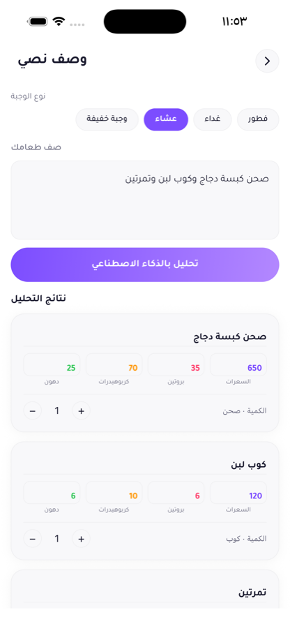
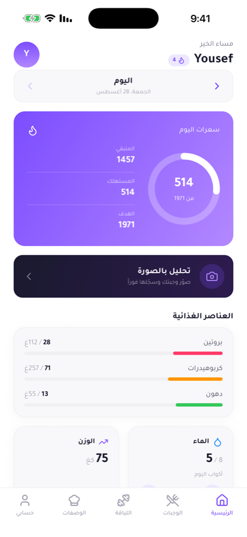
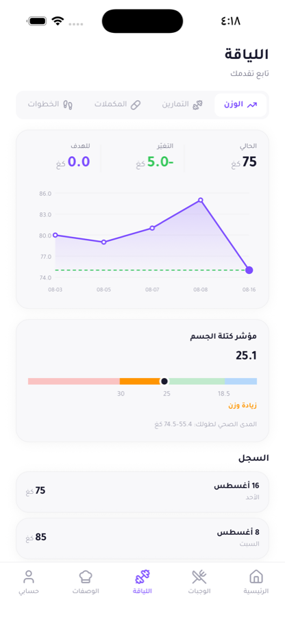
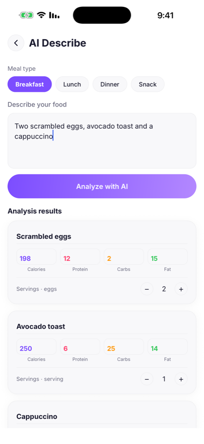
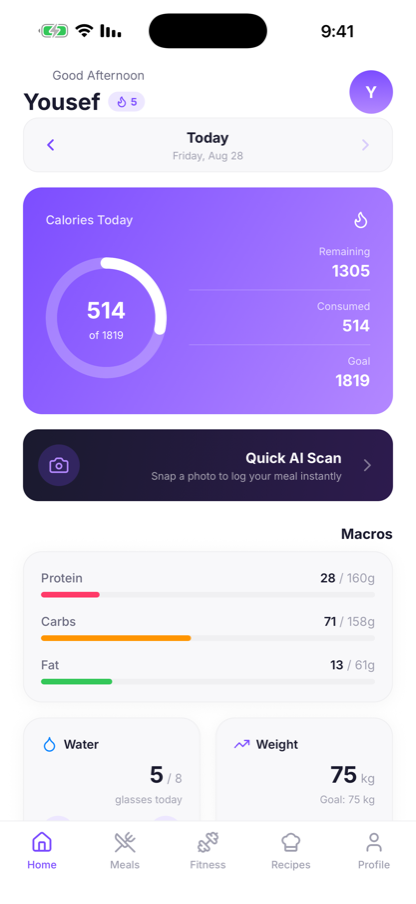
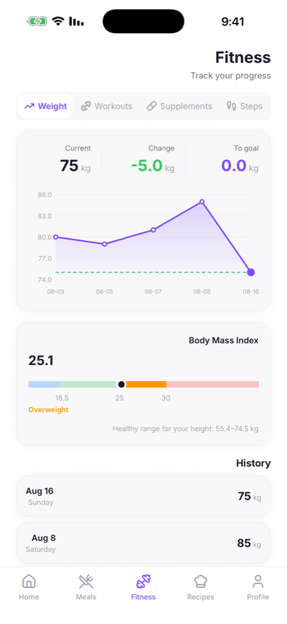

ما الذي يفعلهWhat it does
أربع طرق للتسجيلFour ways to log
صوّر الصحن، أو اكتب «صحن كبسة لحم وسلطة»، أو اختر من مكتبتك، أو أدخل القيم بنفسك.
Photograph the plate, describe it in your own words, pick from your library, or enter the numbers yourself.
يومك كلهYour whole day
سعراتك المتبقية والبروتين والكربوهيدرات والدهون ووزنك ونشاطك — في شاشة واحدة.
Remaining calories, protein, carbs, fat, weight and activity — on one screen.
الوزن على مدىWeight over time
سجّل قياسات وزنك واقرأ الخط العام، لا تقلّبات الصباح الواحد.
Record your weigh-ins and read the trend, not the noise of a single morning.
الخطوات والنشاطSteps and activity
اربط خطواتك ونشاطك من Apple Health، وشوفها بجانب ما أكلته.
Bring in steps and activity from Apple Health, and see them beside what you ate.
الوصفاتRecipes
احفظ وصفاتك بمكوّناتها وحصصها، واعرف سعرات الحصة — وانشرها إن أحببت.
Save recipes with their ingredients and servings, get the calories per serving, and publish them if you like.
لغتان، لا واحدةTwo languages, not one
عربي وإنجليزي بالكامل، حتى اتجاه الواجهة — لا ترجمة مركّبة على تطبيق إنجليزي.
Fully bilingual down to the direction of the interface — not a translation bolted onto an English app.
الدعمSupport
اكتب لنا، ونردّ. لا يوجد نموذج ولا رقم تذكرة — بريد واحد يصل إلى شخص.
Write to us and we answer. No form, no ticket number — one address that reaches a person.
راسلناEmail usتحليل الصور والنصوص يتم عبر خدمة ذكاء اصطناعي، والنتائج تقديرية تختلف باختلاف المقادير وطريقة الطبخ. كالوري ليس جهازاً طبياً ولا بديلاً عن استشارة مختص.
Photo and text analysis runs through an AI service, and the results are estimates that vary with portion size and cooking method. Kalorie is not a medical device and is no substitute for professional advice.